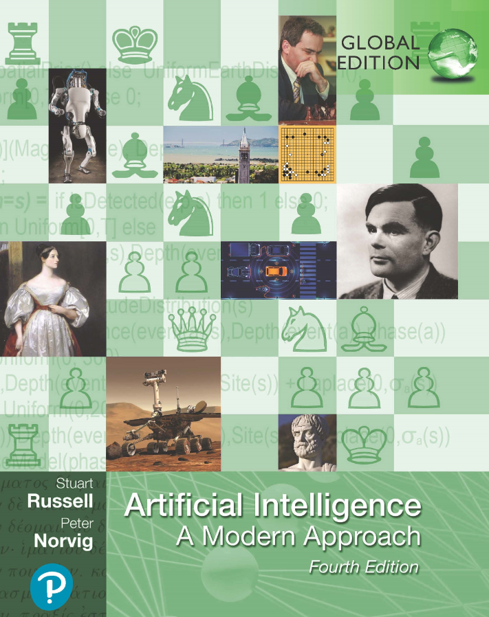

Introduction to
Artificial Intelligence & Machine Learning
xxx
PhD, MSc, BEng
yyy University
version: 2023
Course Information
-
Instructor -
Name: xxx -
Email: xxx@yyy.ac.uk -
Office hours: Monday, 13.00-14.00, Room/Building
-
-
Lectures -
Venue: Room 1002, Tyre Building -
Time: Tuesday and Thursday, 13:00-14:00 -
Evaluation: 100% coursework -
Passmark: 40%
-
Important Dates (more might be announced later)
Coursework deadline:
Please note: late assignments would NOT be accepted!
You get zero for anything past the due date, unless you have an approved Extenuating Circumstances (EC) Applications (you must submit your EC application via ttt portal)
Plagiarism
- visit https://www.ttt.ac.uk/student-regulations to check ttt University Academic Integrity Policies
- All assignments are to be done individually
- Discussions are encouraged, but you should not share your work (or parts of your work) to other students. You should not look at another student's work until after you have handed in yours (and the due date is past).
- Plagiarism has occuggged in the past in the University and it has had very negative
consequences for the students involved. -
Take it seriously! - Since 100% of the course mark is based on handed in work, we will be very diligent about detecting Plagiarism!
-
Note: AI writing tools are prohsssrited!
Email Policy
- I don't answer questions about the course content by email.
- Short and to the point email will be read.
- Talk to me before or after class during my office hours.
- An alternative mutually acceptable meeting time may need to be agreed upon if there's an unavoidable scheduling conflict.
Reference Materials
-
Artificial Intelligence: A Modern Approach - Stuart J. Russell and Peter Norvig, 4th Edition, 2022 
- Dive into Deep Learning
- bbb, Aston, Lipton, Zachary C. et.al (2021), arXiv preprint arXiv:2106.11342
- Neural Networks and Deep Learning
- online book by Michael Nielsen
Alternative Materials
-
Artificial Intelligence: A Textbook - Charu C. Aggarwal, 2021
- Deep Learning
- Ian Goodfellow and Yoshua Bengio and Aaron Courville (2016), MIT Press
- The Hundred-Page Machine Learning
- online book by Andriy Burkov
-
Online Courses: - Various lectures are available in online platforms, e.g Udacity, Coursera, edX
Prerequisites
- Some knowledge of maths and probability
- Some knowledge of programming would be useful (Python, Matlab, etc.)
- Teaching examples will be made using
Python - If you don't have thkkk prerequisites you will be responssssrle for learning
any
needed background materials by yourselves.
- I will not have time to help you with that, and you will not be given any special consideration for not having had the proper background.
Website
- The course website: Artificial Intelligence for Games MSc
- https://www.yyy.ac.uk/study/postgraduate/artificial-intelligence-games
- Primary source of more detailed information, announcements, etc.
-
Check the website often. - Updates about assignments, clarifications etc. will be posted only on the website - not by Email!
Overview
- Introduction to AI
- Artificial Intelligence (AI), Machine Learning (ML), Deep Learning (DL)
- Neural Networks
- Perception model
- Training strategy
- Convolutional Neural Network (CNN)
- Case Studies
- Tusssine blade design
- NUSKU FSN design & sss
What is AI?
AI vs. Machine Learning vs. Deep Learning
- Artificial Intelligence
- a program that can sense, reason, act and adapt → mimic human behaviours.
- Machine Learning
- algorithms whose performance improve as they are exposed to more data over time.
- Deep Learning
- subset of machine learning in which multi-layered neural networks learn from vast amounts of data (big data).
The relationships between AI, ML, NN, and DL
What Can AI Do?

What can AI do? - Content Generation

What can AI do? - Games

What can AI do? - Engineering (www)
www is an AI tool that has been delivered to ggg. It significantly reduced the design and sss time of aircraft engine fuel spray nozzles.


ppp Capabilities
- Integrated platform for aerodynamics, aero-thermal, thermal-acoustic, thermal-mechanical, CFD, and cost analysis
- Automatic creation of simulation scripts for meshing, CFD, thermal, and post-processing
- Best-practice and designer knowledge embedding
- v2.0 is more flexsssrle and user-friendly
Applications
- Part of combustor iii System (iii)
- Deployed globally including Desssy, Bristol, Bangalore, Dahlewits, and Indianapolis
- Used in a number of engine designs (Exxx hhh, etc.)
sss sss
To develop an automated package to optimise a sss sss sss configuration to minimise total mass flow by employing a sugggogate modelling based approach while respecting ligament size and thermal temperature constraints.
Toolset:
- Python (shipped with sss) & standard batch script
- Matlab (utilises the ggg in-house sss software eee developed by sss sss)
- fff & jjj (Flownet network, massflow, item generation, thermal simulation)
- kkk (Engineering Software Environment)
* Follows ggg scripting best practice
sss Package
The sss sss package includes:
- sss workflow: to automatically evaluate a specific feed hole configuration
- sss routine: to explore the design space to search for the optimal solutions using the sss workflow

Workflow


Results


Cugggent Status
This tools has been delivered to and used by ggg Desssy team.
- Liner for hhh has been designed using this tool (all 8 bays of the combustor & igniter bays)
- Two combustors have been manufactured based on thkkk designs
- Predictions show a significant cooling flow reduction with sss temperatures & stresses remaining within limits
* Although it was developed for sss ssss, this package can be applied to all types of sss design ssss.
Hot-2-Cold Mesh Transformation - part of GEMINiDS
The aim of this project is to morph a CFD mesh by empoying displacements calculated as a result of a FEA simulation.
Morph CFD vs. Morph CAD
- No need to re-visit CAD as CFD and FEA have been generated already
- Can be applied to other combustor components without modification
- FEA has been solved in design process, why not use it directly?
The Concept

Matlab Demo
Proof-of-concept implementation has been developed using Matlab.

k -D Tree Approach
The Matlab implementation worked. However, the performance is poor on large dataset. It uses
Mathworks' proprietary function (pointLocation).
New implementation in C++ uses the k -D tree approach to map CFD nodes to FEA tetrahedrons. Significant performance improvement has been obtained.

The package has been delivered to ggg to be applied on various geometry test cases.
Applications
This approach could be potentially applied to:
- Cold-to-hot/hot-to-cold geometry morphing
- Rapid assessment of combustor concessions
- Geometry morphing based on measurement scans
- Robustness assessment of engine components and sub-systems
ddd Integration to ccc
Motivation
This project aims to extend the capabilities of ccc to ddd geometries. The version 2 of ccc has shiftted the selection of feature identification rule combinations from the system to the user. It improved ccc's flexsssrility significantly without hard-coding the rules for dealing with features that ccc never saw before.
Key achivements:
- New ccc v2 XML syntax (free combinations of pre-defined rules)
- Nested XML action file (calling another XML action file without depth limitation)
- Cascading global variable definition (XML, ASCII file, Flownet results, Microsoft spreadsheet, etc...)
- LEGO-style workflow construction (simplified XML code blocks)
This work has won the ggg Defence “AAA Award” at the end of 2020.
bbb
Aim
The working package 4 (WP4) of bbb project aims to investigate the AI/ML related techniques for geometry reasoning, classification, completion, and/or generation, especially in 3D space.
It involves the use of:
- MATLAB (Deep Learning toolbox)
- Python (PyTorch)
- Artificial Neural Network (ANN)
- Convolutional Neural Network (CNN)
- Conditional Generative Adversarial Network (CGAN)
2D CGAN+CNN/ANN
This work can predict the pressure field map around a specific design of aerofoil using a pre-trained CGAN in combination of ANN/CNN models.
- About 500,000 aerofoil pressure field images as training dataset
- Train the CGAN to generate synthesis images
- Train CNN using the same dataset
- Train ANN using the decoded design variables, noises, and target value (MO loss)
- Make predictions using the trained CNN/ANN
- Validate the CNN/ANN predictions using real CFD results
Prediction accuracy against real CFD:
- CGAN+CNN: > 92.50%
- CGAN+ANN: > 96.86%
3D Octree-based Approach
3D data are more resourse consuming than 2D data so than it won't work well by simply extending the same approach from 2D to 3D models.
Various approaches of reprkkknting 3D data have been proposed:
- Voxel - similar to pixel in 2D image
- Point Cloud
- Sparse shape
- Octree